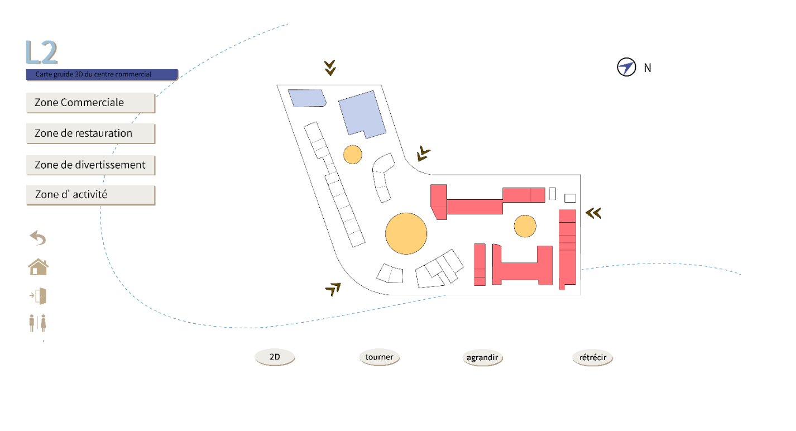

<!DOCTYPE html>
<html lang="en">

<head>
    <meta charset="UTF-8">
    <!-- <meta name="viewport" content="width=1202"> -->
    <!-- <meta http-equiv="imagetoolbar" content="false" name="viewport" content="width=device-width, initial-scale=1.0"> -->
    <title>HUIYI</title>
    <link rel="stylesheet" href="../css/global.css">
    <link rel="stylesheet" href="../css/simulation.css">
    <script src="../lib/vue.min.js"></script>
    <script src="../js/header.js"></script>
    <script src="../js/sidebar.js"></script>
    <script src="../js/footer.js"></script>
</head>

<body oncontextmenu=self.event.returnValue=false onselectstart="return false">
    <div id="vue_app">
        <!--自定义的组件使用-->
        <common-head @switch="handleMenu"></common-head>
        <!--页面自有内容-->
        <div class="content">
            <div class="sidebar-wrap" v-if="isOpen">
                <common-sidebar></common-sidebar>
            </div>
            <div :class="['content-detail', isOpen ? 'moveRight' : '']">
                <div class="condition">
                    <div class="video">
                        <video autoplay loop controls :muted="isMuted">
                            <source src="../img/41.mp4" type="video/mp4">
                        </video>
                    </div>
                    <div class="schema">
                        <h2>Logiciel de simulation 2D/3D et de navigation</h2>
                        <p>Découvrez la Table d'orientation tactile de Huayi Tech.<br />
                            <br />
                            Son logiciel à modélisation 3D intégré fonctionne selon un système tactile interactif "intelligent", souvent utilisé 
                            dans les grands complexes ou autres centres commerciaux.<br /><br />
                            Grâce à l'optimisation des rendus 3D et des itinéraires, la table tactile donne l'opportunité au consommateur de 
                            mieux situer sa place dans l'espace. Il peut ainsi mieux s'orienter et gérer son temps, rendant son expérience du 
                            lieu bien plus agréable.<br /><br />
                            La table d'orientation tactile, perfectionnée par une navigation multitouch ultra-ecace, propose également 
                            d'autres contenus et services : découverte des marques, carte des étages, programmes de cinéma, dernières 
                            activités promotionnelles et évènementielles, etc.</p>
                        <div class="img-wrap">
                            
                        </div>

                    </div>

                </div>

                <common-footer></common-footer>

            </div>

        </div>

    </div>

</body>

</html>
<script>
    //vue
    app_all = new Vue({
        el: "#vue_app",
        data: {
            isOpen: true,
            isMuted: true
        },
        mounted() {
            // var _this = this
            // setTimeout(function () {
            //     console.log("11111")
            //     _this.isMuted = false;
            // }, 1000)
        },
        methods: {
            handleMenu() {
                this.isOpen = !this.isOpen
            }
        }
    })
</script>